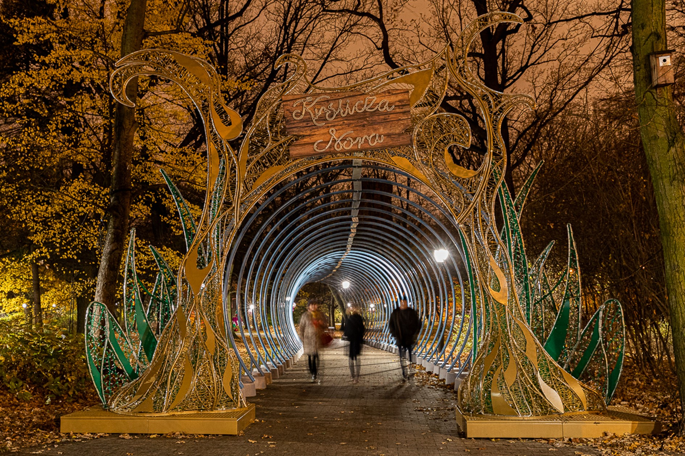

City
Discover the Hidden Gems of Lodz: Exploring the City's Beautiful Parks
Lodz, the vibrant city in Poland, is known for its rich cultural heritage and stunning architecture. However, the city is also home to some of the most beautiful parks in the country. From expansive green spaces to quaint little gardens, Lodz has something for everyone when it comes to parks.
The parks in Lodz have a rich history, and many of them were founded in the late 19th and early 20th centuries. During this time, Lodz was experiencing a rapid industrialization and urbanization, and the city's leaders recognized the importance of creating green spaces for the city's residents.
One of the most popular parks in Lodz is the Park im. Józefa Piłsudskiego, also known as the Piłsudski Park. This park was founded in 1910 and was named after Józef Piłsudski, a Polish statesman and military leader who played a key role in the country's fight for independence. The park was designed by a renowned landscape architect and was intended to be a "green oasis" in the midst of the city's industrial landscape. It's an expansive green space with plenty of walking trails, bike paths, and areas for picnics and relaxation. Visitors can also enjoy a stunning view of the city from the park's highest point.

Parkna Zdrowiu
Another popular park in Lodz is the Park Źródliska. This park was founded in the early 20th century as a health resort. The park was built around a natural spring that was believed to have healing properties, and it quickly became a popular destination for people seeking to improve their health and well-being. This is a smaller park, but it's just as beautiful as any other park in the city. The park is famous for its lush greenery and stunning floral arrangements. Visitors can take a stroll around the park and enjoy the beauty of nature or relax on one of the many benches and enjoy the peaceful atmosphere.
Park Starsi
For those who love history, the Park na Zdrowiu is a must-visit. This park was founded in the early 20th century as a health resort and was built around a natural spring that was believed to have healing properties. The park was also home to the largest Jewish cemetery in Lodz, and now it's a beautiful green space with a lot of history. Visitors can take a stroll around the park and learn about the cemetery's history, or enjoy the stunning scenery and peaceful atmosphere.

Park Zrodliska
Last but not least, the Park Julianowski is a beautiful park located in the eastern part of the city. The park was founded in the late 19th century as a recreational space for the city's growing middle class and was named after Julian Aleksandrowicz, a prominent industrialist and philanthropist who helped fund its construction. This park is a popular spot for families, as it has plenty of space for children to run around and play. Visitors can also take a stroll around the park's lake and enjoy the beauty of the surrounding nature.
Over the years, these parks have undergone many changes and renovations, but they remain an important part of Lodz's cultural heritage. They provide a space for the city's residents to relax, unwind, and connect with nature, and they serve as a reminder of Lodz's rich history and cultural identity. In recent years, the city of Lodz has invested in revitalizing and modernizing its parks, with new walking trails, playgrounds, and other amenities. This has made these green spaces even more accessible and enjoyable for residents and visitors alike.
Overall, the parks in Lodz are not only beautiful and relaxing, but they also serve as an important reminder of the city's history and cultural heritage. Whether you're looking to take a peaceful stroll, enjoy a picnic.
Sources: